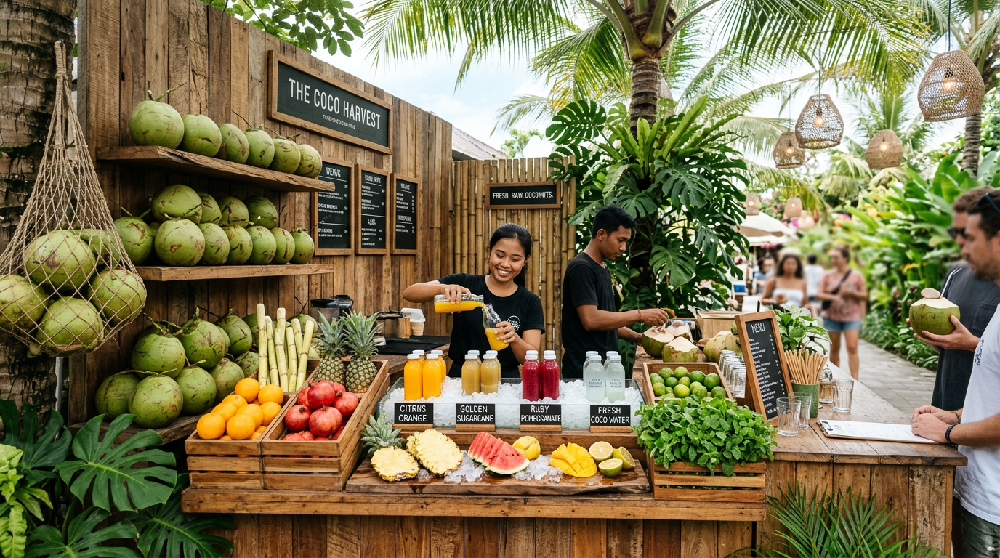
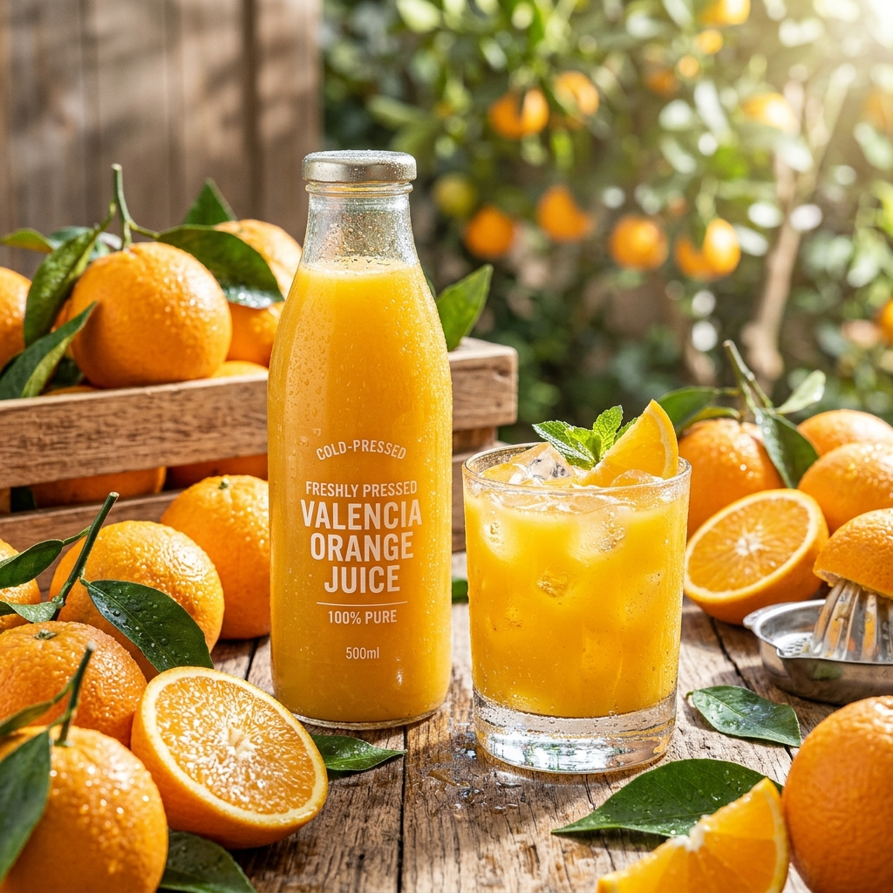
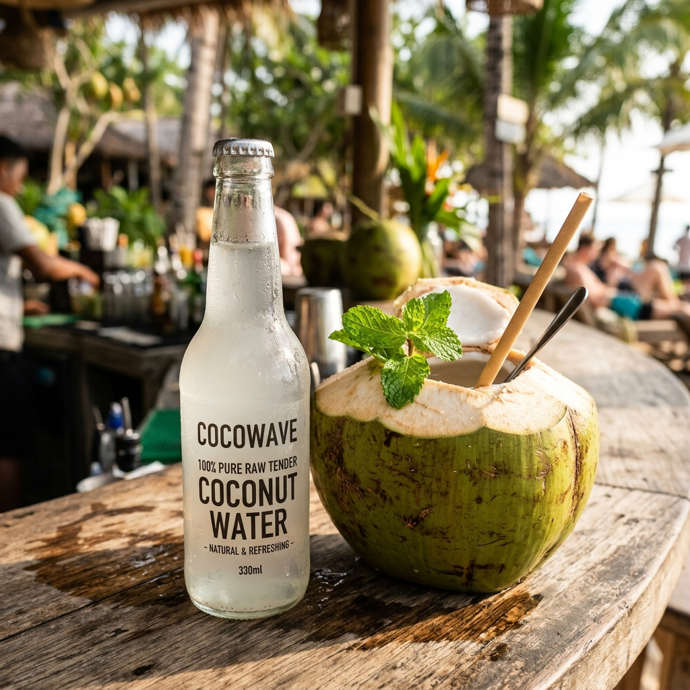

The Architecture of Farm-Fresh Juicing.
“Pure Hydration. Naturally Chilled.” — An ingredient-first study in coastal green tender coconuts, hydraulic cold-pressing, and live stall craftsmanship for the wellness-minded lifestyle.

Featuring Live Decapped Tender Coconut, Crushed Sugarcane, Valencia Orange, Ruby Pomegranate, Malai Shakes & Chilled Bottled Water.
Browse Curated Grid ↓Curated by Hydration Need
Five Signatures of Our Stall
Every green tender coconut and orchard fruit is honored through dedicated, unhurried, live extraction techniques.

Farm-Fresh Green Tender Coconut
Live Machete Decapping · Regular (350ml) & Jumbo (500ml)Sliced open live before you with sweet, clear electrolyte water and velvety spoon-tender coconut flesh (malai).

Cold-Pressed Sugarcane Juice
Stainless-Steel Cold Rollers · Fresh Ginger, Mint & LimeCrushed live without heat from fresh peeled cane stalks, delivering sustained natural stamina, iron, and live enzymes.

Pure Valencia Orange Juice
100% Raw Squeezed · Zero Added Sugar or WaterVibrant tree-ripened citrus gently pressed so zero bitter peel oils enter your glass; overflowing with Vitamin C.

Classic Tender Coconut Malai Shake
Scooped Coconut Meat & Water · Cardamom & PistachioVelvety, spoonable dessert shake made by blending soft coconut flesh with chilled coconut water and roasted nuts.

Pure Bottled Raw Tender Coconut Water
Single-Grove Bottling · Frosted 330ml Glass BottlesChilled raw coconut water bottled fresh on order for grab-and-go hydration with zero chemical preservatives.
Two Drinks, Two Distinct Hydration Profiles
Understanding how live decapping and hydraulic cold-pressing deliver peak nutrition and natural flavor.
Raw Green Tender Coconut
Machete-sliced on order; water enjoyed in-shell with eco paper straw.
- Sensory Profile: Naturally sweet, crisp, mineral-rich; gentle floral coconut undertone.
- Visual Appearance: Opalescent crystal-clear liquid inside fresh emerald-green husk.
- Best For: Instant sports rehydration, natural hangover cure, cellular detoxification.
Cold-Pressed Sugarcane & Juices
Crushed through chilled stainless steel presses without heating or oxidation.
- Sensory Profile: Bright, intensely sweet-tart, bursting with fresh whole fruit aroma.
- Visual Appearance: Frothy jade-green sugarcane, glowing golden-orange, or deep crimson.
- Best For: Clean morning stamina, afternoon vitality boost, rich antioxidant intake.
Whole-Fruit Craft & Zero-Waste Stewardship


Save 10% on Your First Stall Order
Experience the difference of live decapped green tender coconuts and 100% pure fruit juices. Apply code FRESH10 in your cart, plus enjoy free local delivery on orders over $60.
Wedding & Event Stall Bookings
We bring our signature rustic wooden stall, trained coconut cutters, hydraulic juice extractors, and custom monogrammed coconuts directly to your wedding or celebration.